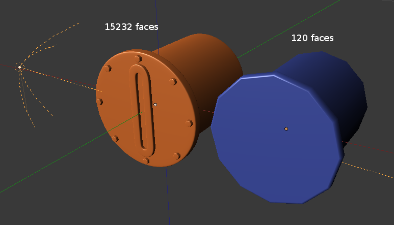

Методики создания ресурсов¶
Карты нормалей¶
Качество 3D-моделей напрямую зависит от уровня ее детализации. С ростом числа полигонов возрастает объем данных, время их загрузки и обработки, уменьшается скорость отрисовки. С целью обхода указанных ограничений применяется метод изготовления карт нормалей. Смысл метода заключается в создании высокополигональной модели, детализация которой затем переносится (“запекается”) на основную низкополигональную модель в виде специальной текстуры (карты нормалей).
{kind=link}
Пример высокополигональной модели и полученной на ее основе низкополигональной.
Что такое “нормал蔶
Нормаль - перпендекуляр к поверхности - имеет важное значение для расчета освещения. При отображении 3D-объекта в графическом движке происходит сравнение нормали в каждой точке с направлением падения света. В результате поверхность, нормаль которой находится по одну сторону с направлением света, отображается как освещенная (если наоборот - то как затемненная).

Ориентация нормалей на поверхности трехмерного объекта.
Что такое “карта нормале锶
Для реализации освещения (без карты нормалей) графический движок использует нормали, рассчитанные в каждой точке меша - т.е. для каждого вертекса. Для отображения пикселов, расположенных между вертексами, используются усредненные нормали. Карта нормалей позволяет использовать “точные”, указанные художником, нормали вместо усредненных.

Затенение объекта без карты нормалей.

Карта нормалей полученная с высокополигонального объекта.

Затенение объекта c картой нормалей.